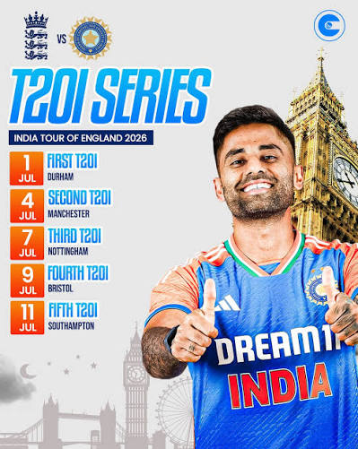

India vs England T20I Series 2026
England won the 5-match T20I series 4-0 against India.
1st T20I, Chester-le-Street - No result (rain)
2nd T20I, Manchester - England won by 4 wickets
watch highlights here of second t20i
3rd T20I, Nottingham - England won by 125 runs
watch highlights here third t20 i
4th T20I, Bristol - England won by 9 wickets
watch highlights here of fourth t20i
5th T20I, Southampton - England won by 56 runs
watch highlights here of fifth t20i
England won the series 4-0
Jos Buttler was Player of the Series after scoring a century in the final match
Full T20I series schedule and results
